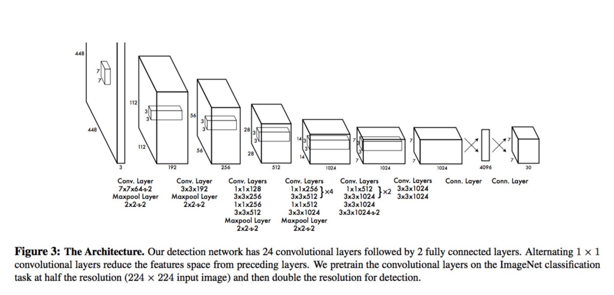
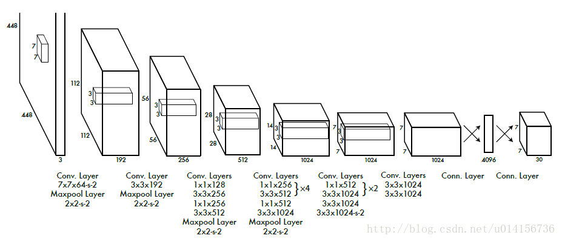
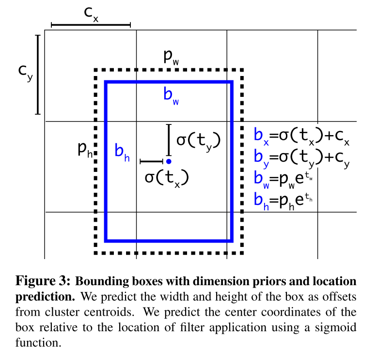
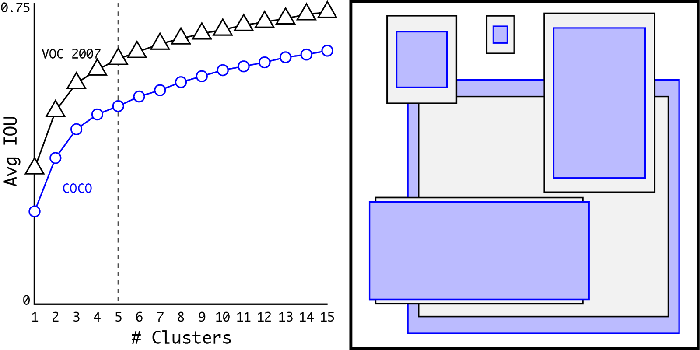
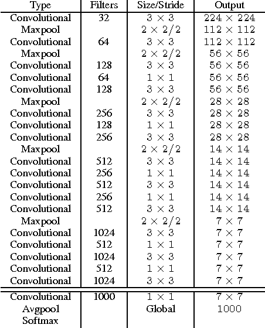

YOLO9000 Faster,Better Object detector
Why YOLO?
You only Look once distinguished network that perform classification and detection.Before YOLO, we used Conv-nets also known as convolutional neural network to train the model to visualize the image and do classification. Conv-nets, only able to classify,if the image has one object. What if image has multiple objects? A single neural network predicts the bounding boxes and class probabilities directly from the full images in one evaluation. The whole detection pipeline is a single network which it can be optimized end-to-end directly on detection performance.To detect
Terms to be known
Before going through this article, I suggest you to watch this tutorial for better understanding. [Tutorial]
Before going to the architecture, we need to know the terms for better understanding the model.
- Anchorbox also known as bounding box which is used to locate the object in the image
- Localisation predicting class of an object with a bounding box
- Batch Normalisation normalizing the input layer by adjusting and scaling the activations to speed up learning.In general batch normalisation reduces the amount by what hidden unit value shifts around.
For example: we haved trained a model on black cat images. So, now if we apply a network on some other colored cats our network won't perform well. The training and prediction sets are both cats but they differ in color. If an algorithm learns some X to Y mapping, and if the distribution of X changes, then we need to retrain the learning algorithm by trying to align the distribution of X with respect to Y. Click here to dig deeper - IoU also known as Intesection over Union during training period, the model may predict lot of bounding box predictions. we eliminate the unwanted bounding box usingNon-max supression to get the bounding box more accurate.$$x = {area\ of\ overlap \over area\ of\ intersection}.$$

- Non-Max supression we must tune the algorithm to pick the perfect bounding box. During training, the algorithm pick several bounding box around the object. By eliminating all the bounding box which IoU value is lesser than 0.5 and eliminating low probabilites associated with each box. $$IoU={IoU\ < 0.5}.$$
- mAP also known as mean Average Precission which we calculate mean value for Average Precission.$$precision = {| {relevant_features} \cap {retrieved_features}| \over |{retrieved_features}|}.$$
Network Architecture
If you really want to dig deeper in this architecture See the full paper
Limitations of YOLO
- YOLO imposes strong spatial constraints on bounding box predictions since each grid cell only predicts two boxes and can only have one class. This spatial constraint limits the number of nearby objects that our model can predict
- It struggles to generalize to objects in new or unusual aspect ratios or configurations
YOLOV2 Architecture
YOLO suffers from variety of shortcomings relative to the state-of-art detection system. Error analysis of YOLO compared to Faster-RCNN shows that YOLO makes significant localisation errors.Furthermore, YOLO has relatively low recall compared to other State-of-art detection system.

[Image source:https://github.com/leetenki/YOLOv2/blob/master/YOLOv2.md]
The following features are added in YOLOV2 to increase mAP and localisation.
- Batch Normalisation:
Batch normalisation leads to significant improvements in convergence while eliminating the need for other forms of regularization. By adding batch normalisation the model improves 2% improvement in mAP.It removes dropout from the model without overfitting. - High Resolution Classifier:
All other detection methods use classifier pre-trained on Imagenet. Most detection system operates the image on resolution 224 x 224. YOLO trains the classifier network for 224 x 224 and increase the resolution to 448 for detection. So, the network simultaneously switch to learning object detection and adjust to the new input resolution. For YOLOv2 the classification network at full 448 x 448 resolution for 10 epochs.This gives the network time to adjust its filters to work better on high resolution input. This method increase of almost 4% mAP. - Convolutional with Anchor boxes:
YOLO predicts the bounding box directly using fully connected layer on top of convolutional feature extractor. YOLOV2 eliminates one pooling layer to make the the output of the network's convolutional layers high resolution. YOLOv2 shrinks the network to operate on 416 input images instead 448 X 448. By doing this, there will be odd number of locations in the feature map, so there will single center cell. - Direct location prediction:
Anchor prediction in YOLO raise issue: Model instability especially during each iterations.Instability comes from predicting the (x,y) location of the box.In region proposal networks the network predicts values tx and
ty and the (x, y) center coordinates are calculated as:
$$x = {(tx * w) - x}$$
$$y = {(ty * w) - y}$$
For example, a prediction of tx = 1 would shift the box
to the right by the width of the anchor box, a prediction of
tx = −1 would shift it to the left by the same amount.This formulation is unconstrained so any anchor box can end up at any point in the image, regardless of what loca-tion predicted the box. With random initialization the model takes a long time to stabilize to predicting sensible offsets.
Instead of predicting offsets we follow the approach of YOLO and predict location coordinates relative to the location of the grid cell. This bounds the ground truth to fall between 0 and 1. We use a logistic activation to constrain the network’s predictions to fall in this range.[see the image] - Fine Grained Features:
This modified YOLO predicts detections on a 13 × 13 feature map. While this is sufficient for large objects, it may benefit from finer grained features for localizing smaller objects.By adding extra layer called Passthrough layer which concatenates the high resolution features with low resolution features by stacking adjacent features into different channels.This turn the network 26x26x512 feature map into 13x13x2048 feature map, which can be concatenated with the original features.This gives a modest 1% performance increase. - Multi-Scale Training:
The original YOLO uses an input resolution of 448 × 448. With the addition of anchor boxes we changed the resolution to 416×416.Instead of fixing the input image size, changing the network every few iterations. Every 10 batches, network randomly chooses a new image dimension size. Since the model downsamples by a factor of 32, we pull from the following multiples of 32: {320, 352, ..., 608}. Thus the smallest option is 320 × 320 and the largest is 608 × 608. We resize the network to that dimension and continue training.
Predicting Bounding box and Confidence of each box
In YOLOV2, the output of the final layer becomes the feature map of n x n depending on the size of the input image corresponds to each grid when the input images is divided into nxn sizes.Each grid has a bounding box of a certain aspect ratio called a plurality of anchors, and YOLOv 2 predicts the center coordinates (x, y) of each anchor and the scale(w, h) of width and height. In addition, each anchor box has a parameter called confidence, which represents the probability that an object exists in the box.

In above figure, the thickness of the line of each box represents the height of confidence, and the longest box of thicker lines means that there is object detection. The major task in Object detection is specifying the bounding box correctly. Each bounding box has the parameters (x,y,w,h). Width and height are calculated by difference between object detected and grid cell. 
Dimensional Clusters:
In YOLO, the prior box are hand picked.The network can learn to adjust the boxes appropriately but if we pick better priors for the network to start with we can make it easier for the network to learn to predict good detections.Instead of choosing hand priors, YOLOv2 run K-means Algorithm to cluster the prior box.Using dimension clusters along with directly predicting the bounding box center location improves YOLO by almost 5% over the version with anchor boxes.
[Image Source: Google]
Darknet-19
A new classification model built in base of YOLOv2.The model contain 19 convolutional layer,5 maxpool layer.

Darket19 Real time Implementation Code:
[code is available here]
Training Your Own YOLOV2 from Scratch:
[Training YOLOV2 from scratch]
References
- Andrew-ng Course: [Introduction to Convolutional networks]
- Original Paper: [Paper]
- Image Source: [YOLOv2 using Pretrained model weights]